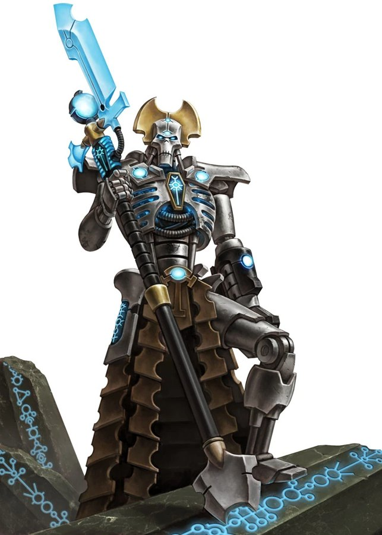
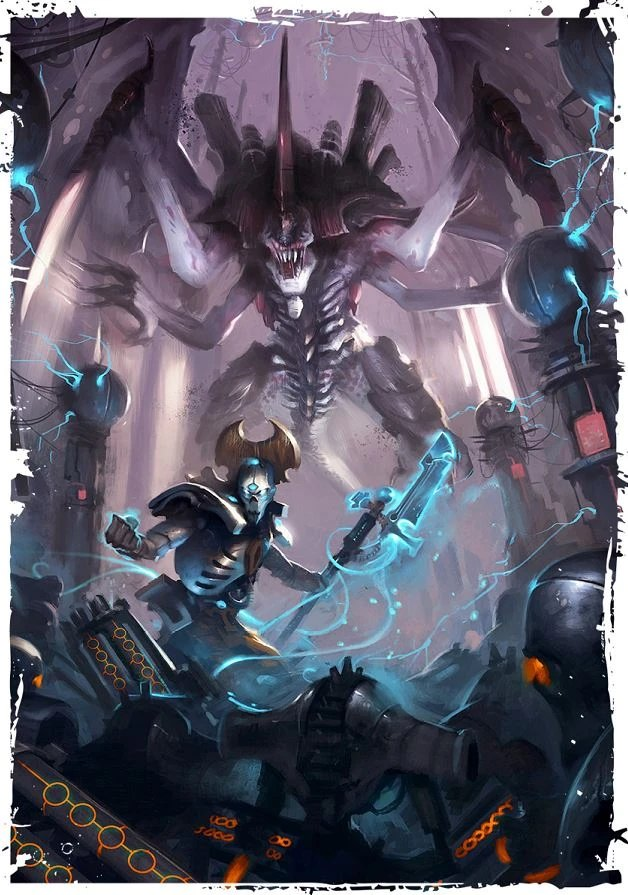

Anrakyr the Traveller
| Anrakyr the Traveller | |
|---|---|
| Necron Overlord of Pyrrhia (abdicated) | |
 Anrakyr the Traveller with his warscythe Artwork © Games Workshop | |
| Necron Overlord of the Tomb World of Pyrrhia | |
| Tenure | Until the awakening from the Great Sleep; abdicated |
| Predecessor | Not recorded |
| Successor | Not recorded |
| Status | Active; first recorded 805.M41 |
| Allegiance | Necrons |
| Homeworld | Pyrrhia |
| Guard | Pyrrhian Eternals |
| Wargear | Necrodermis; Warscythe; Tachyon Arrow |
| Known for | His quest to reunite the Necron dynasties; the Harvest of Ka'mais (902.M41) |
Anrakyr the Traveller is a nomadic Necron Overlord who moves from Tomb World to Tomb World, drawing warriors from each to a cause of his own: the rebuilding of a united Necron realm. He is feared by the younger races and uneasily regarded by his own kind.[1]
Most Necrons woke from the Great Sleep with dulled minds. Anrakyr woke whole and with a purpose. He abdicated his rule of Pyrrhia and led an army into the stars.[1]
Character and methods
[edit]The galaxy he walks is not the one he left. Worlds have been destroyed, cut off by warp storms or moved, and a stasis-tomb recorded on an old map may have been wrecked by quake or meteor. Worse is a sleeping tomb world found infested with lesser life. Whether the invaders are a human colony, an Ork WAAAGH!, a T'au expedition or the industries of the Adeptus Mechanicus, his answer is swift and absolute war, either beside the tomb's own forces or in vengeance for them.[1]
From each awakened or freed tomb he asks a tithe of warriors and weapons. If it is refused, he takes it by force or by trick. To some Necron nobles he is the model of nobility who gave up rank for his people. To those who do not contribute willingly, he is a masterless brigand. His army, worn down by past wars, is always near collapse.[1]
On the field he is guarded by Pyrrhian Eternals, the remnant of the Immortals with whom he began. His will can also be turned on enemy targeting systems, giving him control of their weapons for short periods.[2]
Campaigns
[edit]Ruin of Morrigar (805.M41)
[edit]A gang war on the world of Morrigar woke a tomb, and contact with the world was lost. When the Cadian 207th landed six months later, they found no inhabitants. Anrakyr arrived, took the humans for the destroyers of the tomb, and attacked. His force was left decimated and the 207th was destroyed.[1]
Battle of Dreadpeak (859.M41)
[edit]In the Lazar System he joined the Necrons fighting the Silver Skulls. At Dreadpeak, his Eternals stormed the downed battle barge Argent Hammer, and he turned its working batteries on the Space Marines. With their Chapter Master dead, the Silver Skulls withdrew their blockade.[1]
Harvest of Ka'mais (902.M41)
[edit]A dozen ships of Hive Fleet Gorgon attacking the T'au colony of Ka'mais were destroyed by a Necron fleet that emerged from the dead moon. The T'au greeted Anrakyr with celebration. He ordered the Harvest of Ka'mais, in which most of the colonists were killed or taken. This is possibly the first meeting of the T'au and the Necrons.[1][3]
Carnac Campaign (999.M41)
[edit]Anrakyr came to a world he took for the tomb world Carnac and found it held by Exodite Aeldari. He called for help from other tomb worlds. Reinforcements came from Mandragora, Gidrim and Trakonn, and a contingent from Solemnace led by Trazyn the Infinite. Using Orikan the Diviner's analyses, he muddled the prophecies of the Farseer Eldorath Starbane, and the Aeldari of Alaitoc fought to a standstill. He then marched on the World Spirit shrine to force a head-on battle.[2]

Timeline
[edit]| Date | Event |
|---|---|
| Date not recorded | Wakes from the Great Sleep and abdicates Pyrrhia |
| 805.M41 | Ruin of Morrigar |
| 859.M41 | Battle of Dreadpeak, Lazar System |
| 902.M41 | Harvest of Ka'mais |
| 999.M41 | Carnac Campaign |